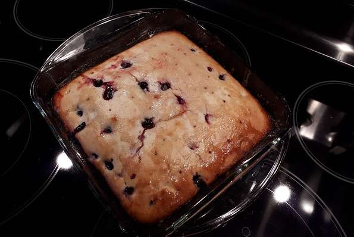

Blueberry cake

This is a delicious blueberry cake made with fresh blueberries
Very nice old fashion type recipe.
The cake is not too sweet at all and is also great with coffee.
Ingredients
- 2 cups all-purpose flour
- 2 teaspoons baking powder
- 1 cup white sugar
- ¼ teaspoon salt
- ⅓ cup shortening
- ¾ cup milk
- 1 egg
- 1 teaspoon lemon zest
- 1 cup blueberries
Steps
- Preheat oven to 350 degrees F (175 degrees C). Grease an 8x8-inch pan.
- Sift flour, baking powder, sugar, and salt together in a large bowl. Beat shortening in a separate bowl until creamy; stir into flour mixture, alternating with milk. Beat flour-shortening mixture until mixed, about 2 minutes. Add egg and beat until mixed, about 1 minute.
- Combine lemon zest with blueberries in a bowl; fold into batter. Pour batter into prepared pan.
- Bake in the preheated oven until a toothpick inserted in the center comes out clean, about 50 minutes.
Return to the top of the page
Return to the main page